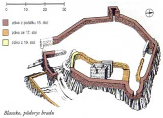
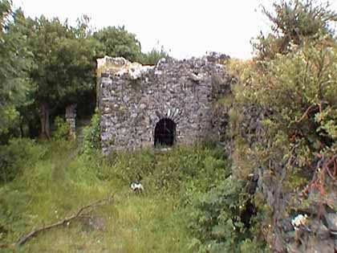
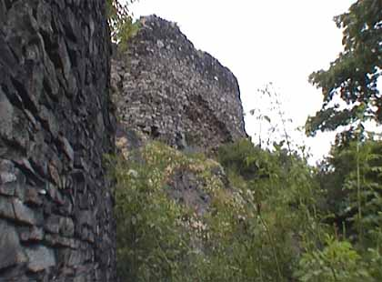

Mezi obcemi Ryjice a Mírkov se na skalnatém ostrohu nad údolím Neštěmického potoka tyčí zbytky středověkého hradu Blansko — sídla Vartemberků z doby před rokem 1400.
Vartemberkové a založení hradu

Hrad Blansko byl vybudován jako středisko pozemkového vlastnictví rodu Vartemberků a podle dochovaných zpráv lze soudit, že se stalo ještě před rokem 1400. Jako zakladatel se uvádí Jan z Vartemberka zvaný Chudoba, který držel rozsáhlé statky na Ústecku. Ovšem již v prvním desetiletí 15. století dochází k rozdělení majetku po Janovi mezi jeho syny a Blansko se spolu se vsí Dolní Zálezly a s městečkem Chlumec dostává do podílu jednoho z nich, Zikmunda z Vartemberka.
Ten má již v roce 1415 jako pán Blanska zájem o převedení lenních statků Chlumec, Záhoří, Ústí nad Labem a jiné do dědičného vlastnictví. Žádá proto krále Zikmunda, aby mu převedl tyto statky do manství. To však ještě neznamená konec vlády Vartemberků nad Blanskem. Hrad a panství Blansko drželi Vartemberkové až do roku 1437, v němž umírá poslední Vartemberk Zikmund. Krátce poté se vlastníkem hradu stal Zbyněk Zajíc z Házmburka a tehdy také nacházíme v psané formě jméno nového hradu, které bylo odvozeno od nedaleké vesnice Blansko.
Páni z Házmburka
Za Zbyňkem Zajícem ovládali Blansko Vilém a Jan z Házmburka. Na krátký čas se hrad Blansko dostal také do rukou Jiřího z Poděbrad, který v roce 1459 daroval hrad v léno Albrechtovi III. Saskému. Husitské války sice způsobily částečné pustnutí panství, ale samotný hrad Blansko zůstal v tomto období bez újmy. Určitou zajímavostí jsou dochované zprávy o sporu mezi městem Ústí nad Labem a Janem z Házmburka. Jádrem sporu byl právě hrad Blansko, podle ústeckých obyvatel v něm sídlili loupežní rytíři.
V průběhu druhé poloviny 15. století přešel hrad Blansko se vším příslušenstvím do rukou rodu Kaplířů ze Sulevic a v roce 1502 Kaplířové rozšiřují svůj pozemkový majetek o získaný zájezdní dům, na jehož místě byl v 16. století postaven blanský zámek.
Páni z Bünau
Přelom 15. a 16. století je dobou, kdy pronikají do českých zemí saské rody. Do severního pohraničí. Do naší oblasti se v této době dostávají Bünové z Děčína a Blansko. Rudolf von Bünau kupuje v roce 1515 blanské panství a sídlem se stává také zmíněný zájezdní dům u Blanska. Ke konci téhož roku se Rudolf von Bünau stává majitelem decembérlakovickémužmtlikoku tou dobou zdevastovaného kláštera Sancta Clara v Ústí nad Labem a jeho majetku a rozšíření blanského panství o majetek zaniklého klarisek. Pod správu bünauovského Blanska se tak dostávají vsi Trmice, Předlice, Habří, Drahkov, Sedlice, Skorotice, Strážky, Hostovice a Otradice.
V této době však dochází k opuštění hradu Blansko. Sídelním místem bünauovského panství se stal již zmíněný zájezdní hostinec, postavený za Kaplířů z Sulevic. V průběhu 16. století byl původní zájezdní hostinec přestavěn na panské sídlo a do současné podoby jako renesanční zámek byla přestavba provedena Rudolfem mladším z Bünau v letech 1578–1581. Rod Bünau a držel původní panství až do třicetileté války. Po roce 1631, kdy se Rudolf z Bünau spojil se saským kurfiřtem proti habsburskému Rakousku, ztratil Bünau po porážce saské armády své statky, které byly Blanskému pánovi zkonfiskovány. Císařem Ferdinandem byl pak majetek Bünaů prodán v roce 1645 Anně Alžbětě Kolovratové.
Vartemberkové na Blansku
Celou dobu, kdy bylo pohraničí kolonizováno německými osadníky, převažovalo v tomto kraji německé obyvatelstvo. Zastavil se tak částečně příliv Němců z Míšenska a saských krajin, ale německý živel se již v tomto kraji plně rozvinul. Původními pány na Blansku byli Vartemberkové. Jan Benešov z Vartemberka přenesl své sídlo někdy kolem roku 1380 od Chlumce na Blansko a nedaleko od něho si postavil blanský hrad, který byl patrně dřevěný a vyhořel v roce 1423. Po něm převzal panství jeho syn Zikmund z Blanska a z Vartemberka, který jej nechal znovu vystavět, tentokrát už jako kamenný hrad, ale zároveň také nechal opevnit ves Blansko a přiléhající rybník.
Zbyněk Zajíc z Házmburka
Dalším majitelem hradu byl Zbyněk Zajíc z Házmburka, který blanské panství získal někdy kolem roku 1437. Ale ani on nebyl jeho majitelem dlouho. V roce 1445 se pustil se svými knechty do přepadávání a plenění okolních krajů. To se ale nelíbilo ústeckým měšťanům, kteří si stěžovali u krále. Ten v roce 1446 Blansko obléhal, hrad byl dobyt a Zbyněk Zajíc byl zabit. Blansko s panstvím bylo uloupeno do rukou zeměpanských a následně král Jiří z Poděbrad je věnoval v roce 1459 v léno Albrechtovi III. Saskému. Tím Blansko přechází pod saskou správu až do bitvy na Bílé Hoře.
Hrad po roce 1500


Někdy po roce 1500 Blansko ztratilo svou hlavní funkci pevnosti a šlechtického sídla. Rod Bünau jej dále nepoužíval a jeho obyvatelé se přestěhovali do Blanského zámku, který byl postaven a upraven ze zájezdního hostince v obci Blansko. Bez údržby hradní objekty postupně chátraly a rozpadaly se. V roce 1601 je veduta jednou z mála, která znázorňuje hrad ještě v plné kráse. Na vedutě od Willenberga je velmi pěkně vidět ještě celý hrad s plně stojící hradní věží, obytným palácem a dvěma hradními křídly.
Postupem času ale hrad chátrá. Jeden z tehdejších majitelů jej nechal dokonce rozebrat a stavebního materiálu bylo použito jako stavebního kamene v okolních obcích, kde bylo stavěno mnoho hospodářských stavení. Dnes již ze středověkého hradu toho mnoho nezůstalo. Je zde stále patrný půdorys hradu, poměrně velká zachovalá zídka bývalého paláce a torzo vstupní bašty s hradební věží. Ze zbytků hradu lze usuzovat, že ve středověku patřil k větším, a tudíž i významnějším hradům v severních Čechách.
Rozhledna Malvínina stráž
V roce 1930 nechal zakladatel tehdejší Krajinářského spolku pro obec Mírkov a okolí postavit na zachovaných skromných zbytcích blanského hradu zděnou rozhlednu. Ta dostala název Malvínina stráž podle manželky Karla Friedricha Lorenze, tehdejšího majitele blanského zámku. Rozhledna byla postavena na nejvyšším bodě hradu a stala se tak dominantou celého okolí. Z její horní části se otvíral překrásný výhled po celém okolí. Bylo z ní možno vidět Ústí nad Labem, Milešovku, Lovoš, hory a kopce Českého středohoří a za dobrého počasí také Krušné hory až k Drážďanům.
Bohužel rozhledna po druhé světové válce nebyla již udržována. Využita byla krátkou dobu jako hájenka, pak jako přístřešek pro myslivce a nakonec byla ponechána zubu času. V posledních letech byla dokonce zdevastována, střecha byla stržena, oken nebylo a její zdi se začaly rozpadat. Teprve v posledních letech se opět objevil zájem rozhlednu zrekonstruovat. Bylo to zásluhou občanů z Neštěmic a okolních obcí, kteří se rozhodli tuto zajímavou stavbu zachránit.
Hrázděná šenkovna
Pod hradem v blízkosti blanského zámku se nachází zajímavý architektonický skvost — hrázděná šenkovna. Jedná se o klasickou hrázděnou stavbu, která byla postavena pravděpodobně koncem 17. století a sloužila jako zájezdní hostinec pro cestující, kteří procházeli po staré obchodní stezce vedoucí z Ústí nad Labem přes Blansko a dále do nitra Čech. Jde o přízemní stavbu s vysoko položenou mansardovou střechou pokrytou pálenou taškou. Hrázděné konstrukce byly zdobeny typickými řeznými prvky.
Šenkovna se za dobu své existence dočkala několika přestaveb, přesto si však v hlavních rysech zachovala svůj původní hrázděný charakter. V současné době bohužel celý tento komplex značně chátrá a potřeboval by nezbytnou rekonstrukci, aby se zachoval pro budoucí generace jako ukázka lidového stavitelství té doby.
Cesta k hradu
K hradu Blansko se dostanete několika pěšími turistickými cestami. Nejkratší cesta vede z Mírkova přes lesní cestu po modré turistické značce, která vás přímo dovede až k ruinám hradu. Další možností je jít z Ryjic po žluté značce po Neštěmickém potoce a odbočit po rozcestníku na modrou značku. Celá procházka je velmi pěkná a mimo samotného hradu nabídne i další přírodní krásy okolí jako je údolí Neštěmického potoka, výhledy na okolní krajinu a v neposlední řadě i krásnou přírodní rezervaci Neštěmické údolí.